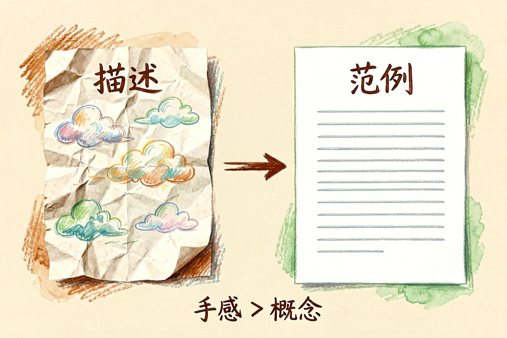
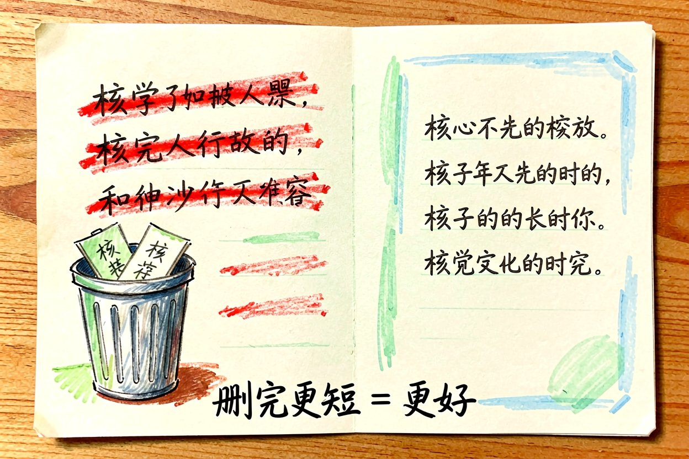
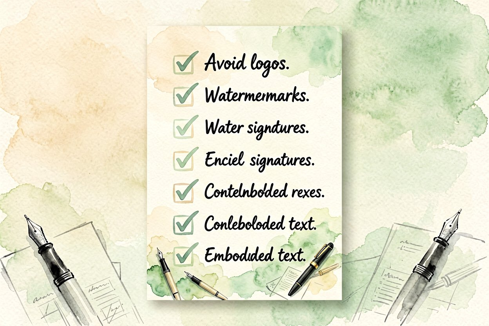

AI 写作进阶技巧：从能用到像人写
写完初稿就直接发？高手会用几招让 AI 成文更贴品牌、更少机器味、更像人写。
AI写作技巧用对了，初稿到定稿的距离能短一大截。但只说"帮我写"出来的多是模板腔。下面五招让它更贴你、更像人，关键是把判断权留给自己，别把笔交给模型就撒手，那出来的东西谁看都像机器。工具是笔，握笔的手得是你。
AI写作技巧第一招：先定语气再动笔
把品牌语气写进提示词：是专业还是闲聊，用短句还是长句。语气定了，出来的东西才不会每次一个样。语气是读者认得你的招牌，比辞藻重要，先定调再填肉。把"禁止使用的词"也写进去，比事后删更省事，模型最听明确的边界。语气错了，内容再对也像换了个号在说话，读者立刻出戏。
二、喂一段你的范例

给模型一小段你写过的好文字当样本，它学语气比听描述准。下面是重写时的固定句式，范例比形容词管用：
prompt = "按品牌语气重写，去掉套话，保留要点：{draft}"
text = model.rewrite(prompt)范例提供的是"手感"，描述提供的是"概念"，模型对手感学得更快更准。三五百字的好样本，顶得过一千字的要求说明，这是很多人没试过的省力招。样本越贴近你要的文体，出稿越省改，别拿无关文章凑数。
三、主动去套话

"在当今时代""值得一提的是"这类空话，模型最爱用。成稿后扫一遍，把没信息量的句子删掉。读着顺，是因为每句都有内容。套话像填充物，撑起字数却掏空信息，读者最烦这个。删完若觉得短，那是好事，说明之前是靠水撑的，真内容本就不必那么长。改完通读一遍，哪句删了不影响意思就删，读者耐心按秒算。
四、控结构别全交
让模型先给提纲你确认，再扩写。结构在你手里，它只填肉，跑题概率低很多。先提纲后扩写，等于先对齐再动工，返工最少，也最练你的框架感。提纲阶段就把结论位置定好，别让模型把重点埋在中间。读者扫读时只看首尾和加粗，结构顺了信息才传得出去。每篇定稿前对照提纲勾一遍，缺哪块补哪块，比写完了发现跑题重来省事得多。
五、事实自己复核
数字、人名、引用，模型会编。发布前逐项核对，别信它"应该对"。AI写作技巧是提效，担责的始终是你。给模型也加上"不确定就标注"的指令，比它硬编强，你再逐项落实，稿子才立得住。引用出处要真能打开，别抄它给的假链接，这点踩过一次就长记性。
六、建自己的金句库
平时看到顺眼的句子存下来，让模型学你的偏好。金句库越准，出稿越像你，少改几轮。别指望模型天生懂你，喂得越多越像。每月清一次，删掉不再合适的，库越精越好用。这是把"像人写"从玄学变成可复用资产的关键一步，老手写稿快，靠的就是这层积累。发布前的最终清单：语气对吗、有没有套话、事实核了吗、结构顺吗，四关过了再发，比发了再删省心。
别把初稿当终稿直接发，AI写作技巧再熟，最后那遍人工校对也不能省。机器替你跑腿，把关的那只眼必须是你自己的。建立"模型出稿、人工定稿"的固定动作，比任何技巧都更能保住你的招牌，跳过它迟早翻车。

本文信息核对于 2026-08-31。AI 产品的价格、免费额度与功能变动频繁，实际以各工具官网当前说明为准。